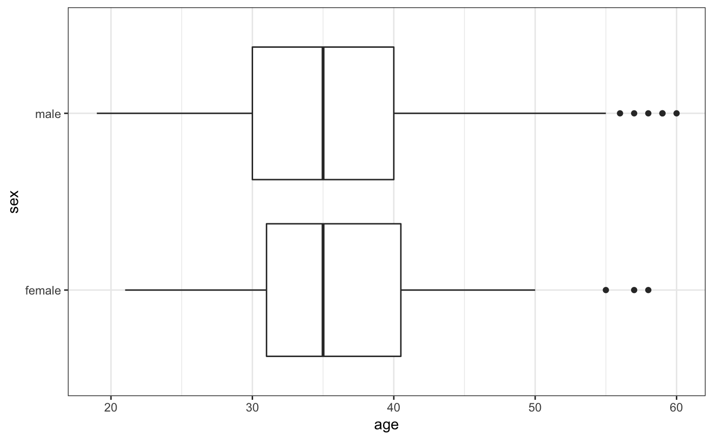

ggformula/lattice Comparison
Nicholas Horton (nhorton@amherst.edu)
2020-03-04
Source:vignettes/ggformula-lattice.Rmd
ggformula-lattice.RmdIntroduction
This document is intended to help users of the mosaic package migrate their lattice package graphics to ggformula. The mosaic package provides a simplified and systematic introduction to the core functionality related to descriptive statistics, visualization, modeling, and simulation-based inference required in first and second courses in statistics.
Originally, the mosaic package used lattice graphics but now support is also available for the improved ggformula system. Going forward, ggformula will be the preferred graphics package for Project MOSAIC.
Histograms
Histograms (ggformula)
library(mosaic) # also loads ggformula
gf_histogram(~ age, data = HELPrct)
Histogram options (ggformula)


Density Plots
Density plots (ggformula)

Overlaid density plots (ggformula)

Density over histograms (ggformula)
We can use stacked layers to add a density curve based on a maximum likelihood fit or a kernel density estimate (see also gf_dist())
gf_dhistogram( ~ age, data = HELPrct,
alpha = 0.5) %>%
gf_fitdistr(color = ~"MLE", dist = "dnorm") %>%
gf_dens(color = ~"KDE") 
Density plots (lattice)

Overlaid density plots (lattice)
 ### Density over histograms (lattice)
### Density over histograms (lattice)
mosaic makes it easy to add a fitted distribution to a histogram.
histogram(~ age, data = HELPrct,
fit = "normal", dcol = "red")
Side by side boxplots
Side by side boxplots (ggformula)

Faceted side by side boxplots (ggformula)

Horizontal boxplots (ggformula)



Scatterplots
Basic scatterplot (ggformula)

Overlaid scatterplot with linear fit (ggformula)

Basic Scatterplot (lattice)

Overlaid scatterplot with linear fit (lattice)
xyplot(cesd ~ age, data = HELPrct,
groups = sex,
type = c("p", "r"),
auto.key = TRUE) 
Faceted scatterplot with smooth fit (ggformula)

More options for scatterplot with linear fit (ggformula)
gf_point(cesd ~ age, data = HELPrct,
color = ~ sex) %>%
gf_lm() %>%
gf_theme(legend.position = "top") %>%
gf_labs(
title = "This is my ggformula plot",
x = "age (in years)",
y = "CES-D measure of
depressive symptoms")
Faceted scatterplot with smooth fit (lattice)
xyplot(cesd ~ age | sex, data = HELPrct,
type = c("p", "smooth"),
auto.key = TRUE) 
More options for scatterplot with linear fit (lattice)
xyplot(cesd ~ age, groups = sex,
type = c("p", "r"),
auto.key = TRUE,
main = "This is my lattice plot",
xlab = "age (in years)",
ylab = "CES-D measure of
depressive symptoms",
data = HELPrct)
Refining graphs
Log scales (ggformula)

Custom Colors (ggformula)
gf_dens(
~ cesd, data = HELPrct,
color = ~ sex) %>%
gf_rug(
0 ~ cesd,
position = position_jitter(height = 0)
) %>%
gf_refine(
scale_color_manual(
values = c("navy", "red"))) 


Want to explore more?
Within RStudio, after loading the mosaic package, try running the command mplot(ds) where ds is a dataframe. This will open up an interactive visualizer that will output the code to generate the figure (using lattice, ggplot2, or ggformula) when you click on Show Expression.
References
More information about ggformula can be found at https://projectmosaic.github.io/ggformula.
More information regarding Project MOSAIC (Kaplan, Pruim, and Horton) can be found at http://www.mosaic-web.org. Further information regarding the mosaic package can be found at https://projectmosaic.github.io/mosaic and https://journal.r-project.org/archive/2017/RJ-2017-024.
Examples of how to bring multidimensional graphics into day one of an introductory statistics course can be found at http://escholarship.org/uc/item/84v3774z.